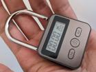
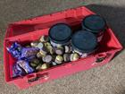
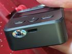

A younger me ate chocolate by the bar and ice cream by the carton. Nothing I ate seemed to hurt me. But eventually, too much junk food began to negatively affected my mood. It also began to negatively affect my weight. I knew I needed to change my habits, but like all humans I was drawn strongly to the pleasures of delicious tastes - and of filling my stomach. I wanted to continue to enjoy my favorite sugary snacks, but I wanted to enjoy them responsibly; unfortunately, willpower could only help me so much.
Thankfully there are other approaches besides willpower to get ourselves to behave in a way we know is best. There are commitment devices, which are decisions we make in the present that limit what decisions we can make in the future. Time release locks are an example of a commitment device. They are locks that require no key or combination; instead, they open automatically when a timer expires. They are often used to control access to cigarettes and addictive prescription medicines. I learned they work quite well for junk food too.

Basic features
This lock is currently available on Amazon for under $25. It is sturdy and has worked reliably for several years. It has a simple digital display, and buttons for setting and starting the timer.
I buy anything I like and can find at an acceptable price. Some of my favorite sugary snacks are Ferrero Rocher, extra dark chocolate baking chips, and Sanders Sea Salt Caramels! I keep them all in one container. Any container with a hole for the shackle of the lock to slip through will do, but I use a large repurposed toolbox. I had it on-hand, and it allows me lots of space.

Stocking the container
Restock infrequently to minimize your free access to junk food; but when you do, fill the container completely. Take advantage of good sales and bulk deals.
In the morning, I enjoy choosing a reasonable amount of junk food from the container to last me the day. I give myself plenty of leeway about what reasonable means. After all, I only want to avoid overindulgence, not to punish myself. After that I make my commitment by locking the container.
Setting the timer
Set the timer for about 20 hours. The lock should release overnight, giving you flexibility around when you get your junk food in the morning.
I allow myself to eat my chosen junk food any time I want, but I usually eat some after breakfast and the rest after lunch. If I experience cravings after that, I sometimes feel upset that the rest my junk food is locked up. I take a little time to remember how my past self limited the choices I have now because he cared about me, and how in the morning I will get to choose more junk food and then make the same commitment all over again, limiting the choices my future self will have because I care about him.

Recharging the battery
Charge through a USB cable every couple months. If the battery runs out of charge, the lock cannot open again until it is at least partially recharged.